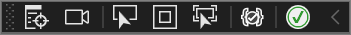
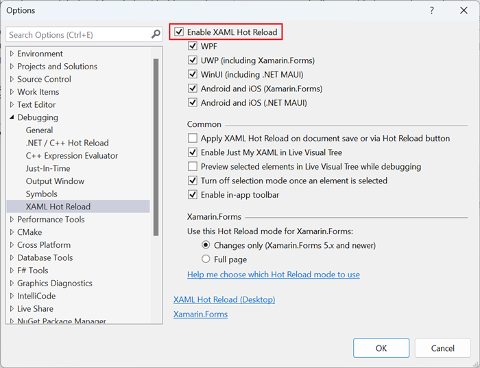
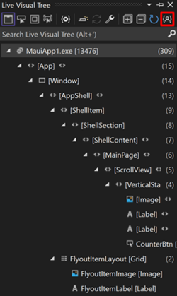
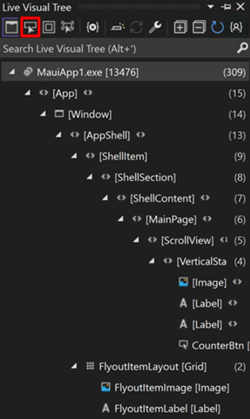
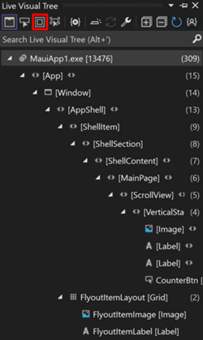
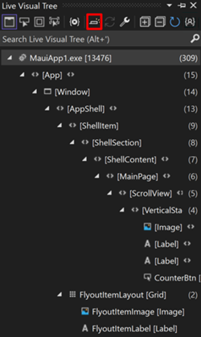
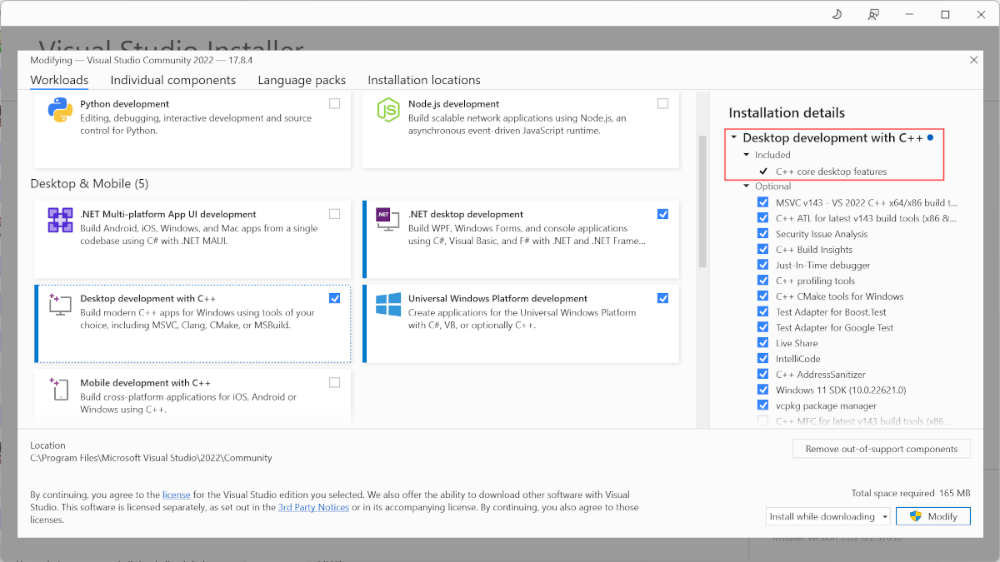
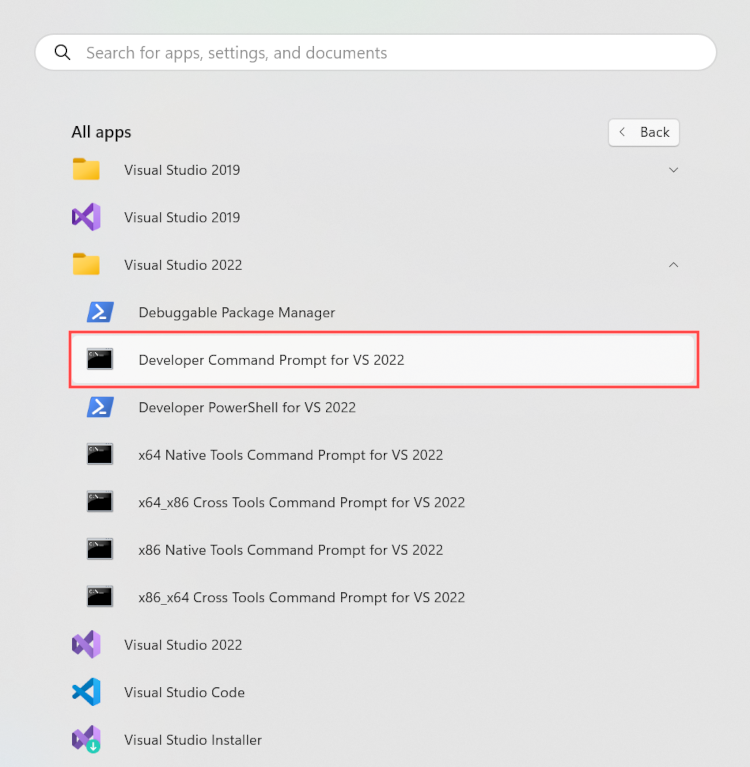
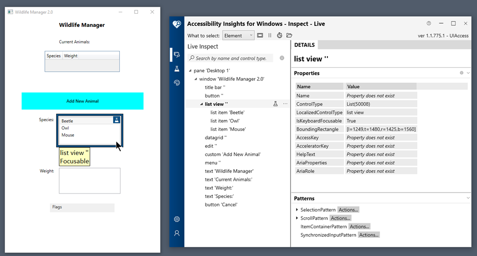

Choose the right visual tree viewer for your Windows app
A visual tree viewer, also known as a UI visualizer, is a tool used to inspect and interact with UI components in a Windows app at run time.
This can be helpful for prototyping, improving user experiences, and debugging UI issues through capabilities such as viewing and traversing component hierarchy, component highlighting, getting and setting state, and deep-linking to associated code.
Recommended tools
The following table identifies several UI visualization tools and the UI frameworks and Windows app platforms they support. A summary of each tool can be found after the table.
| UI platform/framework | Visual Studio - Live Visual Tree | Spy++ | Accessibility Insights | Chromium UI DevTools |
|---|---|---|---|---|
| WinUI in the Windows App SDK | Supported | Not supported | Supported | Not supported |
| WPF | Supported | Not supported | Supported | Not supported |
| React Native for Desktop | Supported | Not supported | Supported | Supported |
| .NET MAUI | Supported | Not supported | Supported | Not supported |
| WinForms | Supported | Supported | Supported | Not supported |
| WinUI 2 for UWP | Supported | Not supported | Supported | Not supported |
| Classic Visual Basic apps | Not supported | Supported | Not supported | Not supported |
| Classic Win32 apps | Not supported | Supported | Not supported | Not supported |
| Chromium-based apps | Not supported | Not supported | Not supported | Supported |
Visual Studio - Live Visual Tree
The Live Visual Tree and Live Property Explorer features ship with Visual Studio and work in tandem to provide an interactive runtime view of the UI elements in your app.
When to use Live Visual Tree
Use these tools when building apps with WinUI in the Windows App SDK, WinUI 2 for UWP, WPF, .NET MAUI, WinForms, or React Native for Desktop.
- For more information on WinUI in the Windows App SDK, WinUI 2 for UWP, and WPF, see Inspect XAML properties while debugging.
- For more information on .NET MAUI, see Inspect the visual tree of a .NET MAUI app.
Note
The WPF Tree Visualizer is a legacy feature and is not in active development. You can use the WPF Tree visualizer to explore the visual tree of a WPF object, and to view the WPF dependency properties for the objects that are contained in that tree.
How to use Live Visual Tree
XAML Hot Reload must be enabled to view the Live Visual Tree (this feature is enabled by default in Visual Studio 2019 and later).
To check if XAML Hot Reload is enabled, run your app with the Visual Studio debugger attached (F5 or Debug -> Start Debugging). When the app starts, you should see the in-app toolbar, which confirms that XAML Hot Reload is available (as shown in the following image).

If you don't see the in-app toolbar, select Debug > Options > XAML Hot Reload from the Visual Studio menu bar. In the Options dialog box, make sure that the Enable XAML Hot Reload option is selected.

Once your app is running in debug configuration (with the debugger attached), navigate to the Visual Studio menu bar (Debug > Windows > Live Visual Tree). This opens the Live Visual Tree pane with a real-time view of your XAML code.
By default, the Just My XAML option for the Live Visual Tree is selected. This provides a simplified view of the XAML element collection in your app and can be toggled on or off through the Show Just My XAML button as shown in the following image.

Capabilities of Live Visual Tree
The Live Visual Tree toolbar provides several options for selecting elements to examine through your application's UI at runtime.
Select Element in the Running Application. With this mode on, when you select a UI element in the application, the Live Visual Tree automatically updates to show the node and it's properties in the tree corresponding to that element.

Display Layout Adorners in the Running Application. With this mode on, the application window shows horizontal and vertical lines along the bounds of a selected object and a rectangle outlining its margins.

Preview selection. With this mode on, Visual Studio shows the XAML where the element is declared (if you have access to the application source code).

Spy++
Spy++ (SPYXX.EXE) is a Win32-based utility that ships with Visual Studio and provides a graphical view of the system's processes, threads, windows, and window messages.
When to use Spy++
Use Spy++ when building a classic Win32 application or one that uses Win32 APIs to draw its UI elements, such as WinForms and Classic Visual Basic apps.
Note
For .NET framework apps, Spy++ is of limited usefulness as the window messages and classes intercepted by Spy++ don't correspond to managed events and property values.
How to use Spy++
Spy++ can be started from either Visual Studio or the Developer Command Prompt for Visual Studio.
To start Spy++ from Visual Studio:
- Confirm that your Visual Studio installation includes the C++ core desktop features component from the Desktop development with C++ workload. (This is installed by default with Visual Studio 2022.)

- When installed, Spy++ is available from the Tools menu.
- Spy++ runs independently of Visual Studio, which can be closed if no longer required.
To start Spy++ from the Developer Command Prompt for Visual Studio:
- Launch Developer Command Prompt for Visual Studio from the Windows Start menu.

- At the command prompt, enter spyxx.exe (or spyxx_amd64.exe for the 64-bit version) and press Enter.
For more specific information on how to use Spy++ from Visual Studio, see Spy++ Toolbar.
Capabilities of Spy++
Spy++ displays a graphical tree of relationships among system objects, with the current desktop window at the top of the tree and child nodes representing all other windows listed according to the standard window hierarchy. It can provide valuable insight into an application's behavior that is not available through the Visual C++ debugger.

With Spy++ you can:
- Search for specific windows, threads, processes, or messages.
- View the properties of selected threads processes or messages.
- Select a window, thread, process, or message directly in the tree view.
- Use the Finder Tool to select a window using the mouse pointer (Search -> Find Window).

- Set a message option by using a complex message log selection parameter.
For Spy++ documentation, see Spy++ Help.
Accessibility Insights for Windows - Live Inspect
Accessibility Insights for Windows - Live Inspect is a downloadable Microsoft application that can help developers find and fix accessibility issues in Windows apps that support UI Automation. It helps developers verify that an element in an app has the correct UI Automation properties simply by hovering over the element or setting keyboard focus to it.
When to use Accessibility Insights - Live Inspect
Live Inspect is typically used in conjunction with Live Visual Tree, Spy++, and other tools when building apps with WinUI in the Windows App SDK, WinUI 2 for UWP, WPF, .NET MAUI, WinForms, or React Native for Desktop.
How to use Accessibility Insights - Live Inspect
Accessibility Insights must be downloaded and installed from Download Accessibility Insights.
Capabilities of Accessibility Insights - Live Inspect
Live Inspect displays a graphical tree of relationships among system objects with detail panes containing the UI Automation properties and patterns corresponding to the selected element. The current desktop window is displayed at the top of the tree and child nodes representing all other windows listed according to the standard window hierarchy.
With Live Inspect you can:
- Verify that an element in an app has the right UI Automation properties simply by hovering over the element or setting keyboard focus on it.
- Visually highlights elements in the target application.
- Test controls or patterns with manual or automated checks for compliance with numerous accessibility rules and guidelines.

To learn more about UI Automation, see UI Automation Overview.
To learn more about Accessibility Insights, see Accessibility Insights for Windows
Chromium UI DevTools for Windows
Chromium UI DevTools for Windows is a tool from Google that lets you inspect the UI system like a webpage using the frontend DevTools Inspector.
When to use Chromium UI DevTools for Windows
Use Chrome UI DevTools if you're developing a Chromium project, including progressive web apps or Electron desktop apps. For more information on Electron, see the DevTools extension on GitHub.
How to use Chromium UI DevTools for Windows
The Chromium UI DevTools for Windows codebase must be downloaded from GitHub and built with Visual Studio. For more information, see the UI DevTools Overview.
Capabilities of Chromium UI DevTools for Windows
Chromium UI DevTools for Windows uses a webpage front end to display and traverse views, windows, and other UI elements.
With Chromium UI DevTools for Windows you can:
- Use a hierarchical UI element tree to inspect UI elements and their properties.
- Use Inspect mode, which highlights a UI element when you hover over it and reveals the element's nodes in the UI element tree.
- Use the Elements panel to open a search bar and find an element in the UI element tree using name, tag, and style properties.
- Use the Sources panel to open the class header file in Chromium code search and pull in the code from local files.